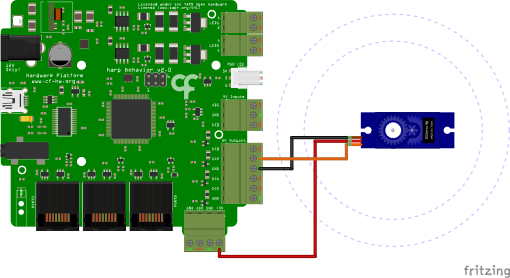

Servo Motor Control
Summary
This example demonstrates how to control a servo motor using the Harp Behavior board (see hardware schematics below).
Workflow
Details
- Establishes the commands to be sent to the Behavior board. To create the subject node, right-click on the Behavior node -> Create Source -> Behavior Subject, and name it accordingly.
- Sets the period of the servo motor's PWM in microseconds. Normal servos use a period of \(20000\mathsf{\mu s}\).
- Enables the servo motor when 'A' is pressed.
- Disables the servo motor when 'S' is pressed.
- Sets the desired angle of the servo motor.
- Converts the angle into a PWM pulse width, which typically ranges between a minimum value of \(1000\mathsf{\mu s}\) and a maximum value of \(2000\mathsf{\mu s}\).
- Converts the pulse width into an integer value.
- Sets the pulse width property of the servo motor and emits a new event forward.
- Creates a new Harp message with the new pulse width.
Requirements
This example requires the following Bonsai packages:
- Harp - Behavior
Schematics
The Harp Behavior board can control two servo motors in ports DO2 and DO3. The DOs output voltage is 5V. In this example, the board controls controls the position of a servo motor connected to DO2.
